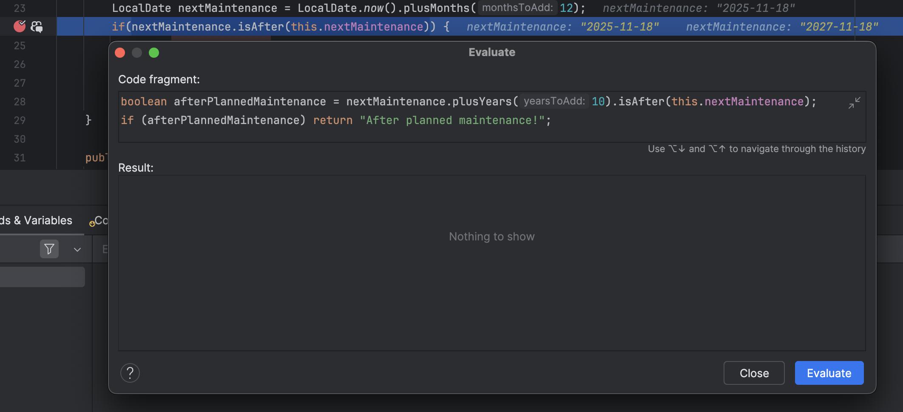

Przemysław Kędzierski
System.out.println("xyz method executed");
System.out.println("xyz method executed");
System.out.println("xyz method executed");
System.out.println("xyz method executed");
System.out.println("xyz method executed");
| Class Pattern | Method Name | Result |
|---|---|---|
| Car | * | All methods from Car class |
| * | getName | All getName methods |
| * | * | All methods |
| Car | get* | All getters from Car class |
you can execute the logic using program variables
You can find the instance by
this.isEqual(LocalDate.of(2027,11,18))
public void start() {
System.out.println("Car started");
IntStream.iterate(0, n -> n + 1)
.limit(90)
.filter(speed -> speed < 50 ?
speed % 4 == 0 : speed % 3 == 0)
.boxed()
.map(speed -> {
int modulo8Result = speed % 7;
return modulo8Result > 3 ?
speed - 1 : speed + modulo8Result;
})
.forEach(speed ->
System.out.println("Speed: " + speed));
}